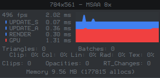

Optimizing NoesisGUI Performance
This section is intended as a reference for ways to improve the performance of NoesisGUI.
Rendering Performance
Note
For optimizing graphics performance XamlPlayer has a Statistics panel that can be toggled with F2.

Antialiasing
NoesisGUI implements a very fast antialising algorithm that can be used instead of GPU full-scene antialiasing. To use it you have to activate the PPA (per-primitive algorithm) algorithm in the renderer. PPA implements antialiasing by extruding the contours of the triangles smoothing them. The paths are slightly altered though.
Opacity Groups
Whenever possible element's Opacity property must be avoided because it can cause the use of offscreen surfaces. The number of offscreen surfaces used is indicated in the stats panel by the counter RT_Changes.
For example, in the following XAML:
<StackPanel
xmlns="http://schemas.microsoft.com/winfx/2006/xaml/presentation"
xmlns:x="http://schemas.microsoft.com/winfx/2006/xaml" Background="Aqua" Width="500" Height="500">
<Rectangle Fill="#FFFF0000" Width="100" Height="100" Opacity="0.50"/>
<Rectangle Fill="#80FF0000" Width="100" Height="100"/>
</StackPanel>
Although the aspect of both rectangles is the same, the first one is being rendered to an offscreen texture and later being copied to the main surface. It is very important not using this kind of opacity when there is only a single node (like in this example). In these cases is better transferring the alpha to the brush, like shown in the second example. We could detect and optimize this case in the future but it is better not relying on it.
When you use a Brush to set the Fill or Stroke of an element, it is better to set the Brush.Opacity value rather than the setting the element's Opacity property.
Tip
In XamlPlayer, the Overdraw debug mode (CTRL + O) displays opacities in red color.
Batching
As a general rule, the minimal number of paths must be used. If you can collapse several paths in the same one, it will improve render performance because the number of drawcalls (batches) sent to the GPU is minimized. Do this whenever your content allows it. Even if you don't do it, NoesisGUI is able to optimize the number of batches by following these rules:
- Solid color brushes always batch. Solid color is the fastest brush. Use it whenever possible.
- Linear brushes batch if they are using the same ramp.
- Radial gradients only batch is using the same parameters (radius and focus).
- Image brushes batch if the images are in the same texture (atlas).
The statistics panel display the percentage of triangles for each kind of brush. You can also activate the Batching debug mode (CTRL + B) in XamlPllayer to visually display each batch with a different color.